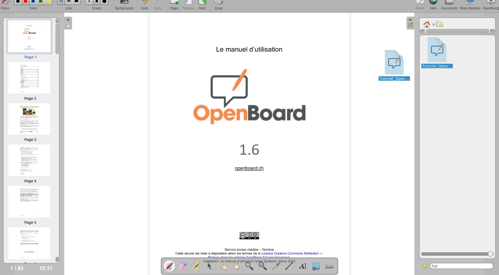

OpenBoard-Dokumente zu Favoriten hinzufügen
Als neue Funktion in Version 1.7 können Sie OpenBoard-Dokumente zu Ihren Favoriten hinzufügen!
Gehen Sie dazu in den Dokumentenmodus, wählen Sie ein Dokument aus und klicken Sie auf  in der Symbolleiste des Dokumentenmodus.
in der Symbolleiste des Dokumentenmodus.

Schnell von einem Dokument zum anderen wechseln
Ihre Lieblingsdokumente erscheinen in der OpenBoard-Bibliothek unter 
Jedes dieser OpenBoard-Dokumente () kann dann per Drag & Drop auf die Tafel gezogen werden!

 Sie können die Suchleiste am unteren Rand der OpenBoard Bibliothek verwenden, um ein Dokument anhand seines Namens zu finden
Sie können die Suchleiste am unteren Rand der OpenBoard Bibliothek verwenden, um ein Dokument anhand seines Namens zu finden
Zuletzt geöffnete Dokumente
Jedes geöffnete Dokument wird vorübergehend zu den Favoriten hinzugefügt, sodass Sie während einer Sitzung schnell zwischen ihnen wechseln können, ohne sie explizit als Favoriten markieren zu müssen.
 Wenn Sie ein kürzlich geöffnetes Dokument dauerhaft zu den Favoriten hinzufügen möchten, können Sie dies über den Ordner Favoriten in der OpenBoard Bibliothek tun: Markieren Sie es und klicken Sie auf
Wenn Sie ein kürzlich geöffnetes Dokument dauerhaft zu den Favoriten hinzufügen möchten, können Sie dies über den Ordner Favoriten in der OpenBoard Bibliothek tun: Markieren Sie es und klicken Sie auf